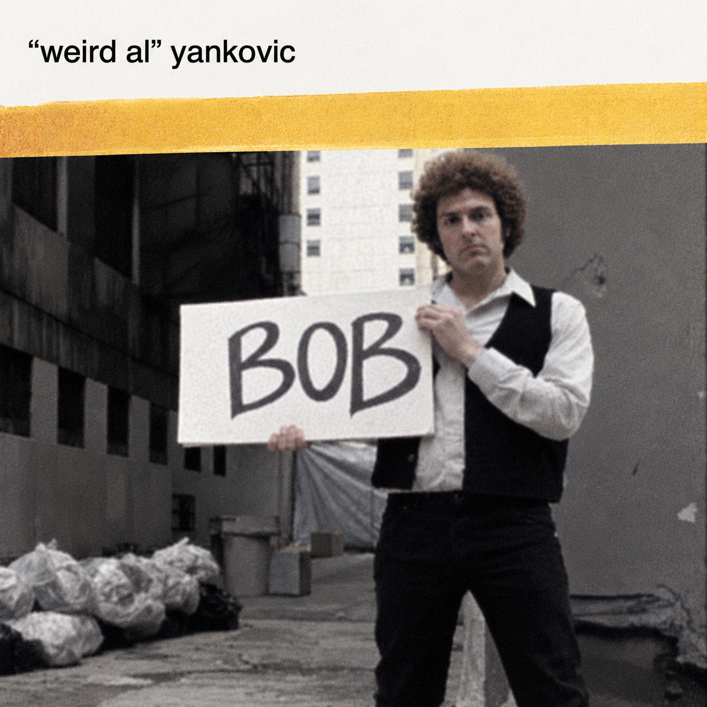

Imagem modificada com ajuda da inteligência artificial
“Bob” é uma música de “Weird Al” Yankovic, lançada no álbum Poodle Hat, de 2003. A canção é uma paródia estilística de Bob Dylan e é composta inteiramente por palíndromos, incluindo o próprio título. Um palíndromo é uma palavra ou frase que pode ser lida da mesma forma de trás para frente, desconsiderando espaços e sinais de pontuação. Um exemplo é o primeiro verso da música: “I, man, am regal — a German am I” (“Eu sou um homem majestoso — um alemão sou eu”).
Embora não tenha alcançado posições nas paradas musicais quando foi lançada, a canção posteriormente se tornou objeto de análises críticas e acadêmicas. O crítico musical Nathan Rabin observa que a letra parece suficientemente enigmática para ser considerada genuinamente semelhante ao estilo de Dylan, mas, na realidade, é formada por palíndromos apresentados com uma reprodução impressionante da voz anasalada do cantor. Os estudiosos Randall Auxier e Douglas R. Anderson chegaram a descrever Yankovic como alguém que teria “superado” Dylan em uma hipotética competição entre os dois artistas.
O videoclipe reforça a homenagem paródica a Bob Dylan: nele, “Weird Al” interpreta o cantor e recria o estilo visual do vídeo musical de “Subterranean Homesick Blues”. O clipe foi gravado em um beco no centro de Los Angeles e conta com participações especiais de Jon “Bermuda” Schwartz e Jay Levey, que aparecem ao fundo, em referência aos homens vistos no vídeo original de Dylan, filmado em frente ao Savoy Hotel, em Londres, em 1965. Na gravação original, essas figuras eram o poeta Allen Ginsberg e o músico Bob Neuwirth.
A música também apresenta uma curiosidade relacionada à sua data de criação: foi composta e lançada em 2002, um ano palíndromo. Além disso, Yankovic já havia parodiado Bob Dylan anteriormente no filme UHF. Por motivos não esclarecidos, o videoclipe de “Bob” não esteve disponível no YouTube fora dos Estados Unidos até agosto de 2024, quando uma versão remasterizada em alta definição foi disponibilizada.
I, man, am regal - a German am I
Never odd or even
If I had a hi-fi
Madam, I'm Adam
Too hot to hoot
No lemons, no melon
Too bad I hid a boot
Lisa Bonet ate no basil
Warsaw was raw
Was it a car or a cat I saw?
Rise to vote, sir
Do geese see God?
"Do nine men interpret?" "Nine men," I nod
Rats live on no evil star
Won't lovers revolt now?
Race fast, safe car
Pa's a sap
Ma is as selfless as I am
May a moody baby doom a yam?
Ah, Satan sees Natasha
No devil lived on
Lonely Tylenol
Not a banana baton
No "x" in "Nixon"
O, stone, be not so
O Geronimo, no minor ego
"Naomi," I moan
"A Toyota's a Toyota"
A dog, a panic in a pagoda
Oh no! Don Ho!
Nurse, I spy gypsies - run!
Senile felines
Now I see bees I won
UFO tofu
We panic in a pew
Oozy rat in a sanitary zoo
God! A red nugget! A fat egg under a dog!
Go hang a salami, I'm a lasagna hog!